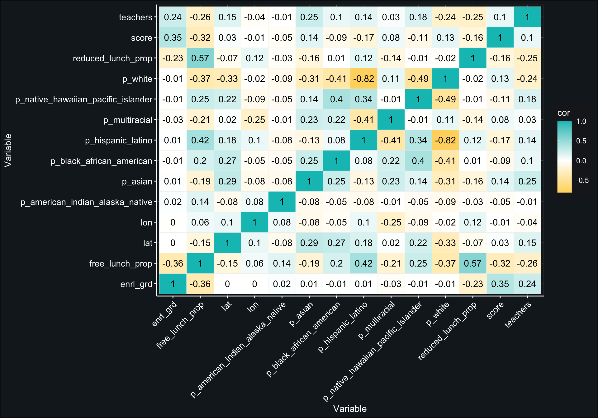

Tensor Flo Ridas: A Journey in Machine Learning
theme_tensor_flo <- function() {
theme_bw() %+replace%
theme(
legend.background = element_rect(fill = "#1b1d22",
colour = "#1b1d22"),
panel.background = element_rect(fill = "#171f24",
colour = "#1b1d22",
size = 0.5,
linetype = "solid"),
panel.grid.major = element_line(size = 0.2,
linetype = 'solid',
colour = "gray40"),
panel.grid.minor = element_line(size = 0.0,
linetype = 'solid',
colour = "gray40"),
axis.line = element_line(colour = "white"),
plot.background = element_rect(fill = "#171f24"),
text = element_text(color = "white"),
axis.text = element_text(color = "white"),
axis.ticks = element_line(color = "white"),
strip.background = element_rect(fill = "white",
colour = "white"))}# read in data set
data <- read_csv("data/train.csv",
col_types = cols(.default = col_guess(),
calc_admn_cd = col_character())) %>%
select(-classification)
# read in free/reduced lunch data and student counts
frl <- import(here("data", "lunch.csv"),
setclass = "tbl_df") %>%
janitor::clean_names() %>%
filter(st == "OR") %>%
select(ncessch, lunch_program, student_count) %>%
mutate(student_count = replace_na(student_count, 0)) %>%
pivot_wider(names_from = lunch_program,
values_from = student_count) %>%
janitor::clean_names() %>%
mutate(ncessch = as.double(ncessch))
stu_counts <- import("https://github.com/datalorax/ach-gap-variability/raw/master/data/achievement-gaps-geocoded.csv",
setclass = "tbl_df") %>%
filter(state == "OR" & year == 1718) %>%
count(ncessch, wt = n) %>%
mutate(ncessch = as.double(ncessch))
frl <- left_join(frl, stu_counts)
rm(stu_counts)
frl <- frl %>%
mutate(free_lunch_prop = free_lunch_qualified / n,
reduced_lunch_prop = reduced_price_lunch_qualified / n) %>%
select(ncessch, ends_with("prop"))
# read in staff data
staff <- import(here("data", "staff.csv"), setclass = "tbl_df") %>%
janitor::clean_names() %>%
filter(st == "OR") %>%
mutate(ncessch = as.double(ncessch)) %>%
select(ncessch, teachers)
# read in school characteristics data
school_chars <- import(here("data", "school_characteristics.csv"),
setclass = "tbl_df") %>%
janitor::clean_names() %>%
filter(st == "OR") %>%
mutate(ncessch = as.double(ncessch)) %>%
select(ncessch, titlei_status, nslp_status, virtual)
# read in ethnicity data
eth <- import(file = here::here("data",
"fallmembershipreport_20192020.xlsx"),
sheet = "School (19-20)",
setclass = "tibble") %>%
janitor::clean_names() %>%
select(attnd_schl_inst_id = attending_school_id,
sch_name = school_name,
matches("percent"))
names(eth) <- gsub("x2019_20_percent", "p", names(eth))
# combine our data with frl, staff, school characteristics, and ethnicities
data <- data %>%
left_join(frl) %>%
left_join(staff) %>%
left_join(school_chars) %>%
left_join(eth)
# remove unneeded dataframes
rm(frl, staff, school_chars, eth)Create splits
Set a seed, split your data into training and test data, and extract the training data
set.seed(3000)
# data %<>%
# select(-matches("lat|lon|native|multi|black"))
# data <- data %>%
# slice_sample(prop = .01)
data_split <- initial_split(data)
data_train <- training(data_split)
data_test <- testing(data_split)
data_train_cv <- vfold_cv(data_train)Exploring the data
hist_data <- data_train %>%
select(where(is.numeric),
-contains("id"),
-ncessch) %>%
dplyr::rename("Grade" = `enrl_grd`,
"Latitude" = `lat`,
"Longitude" = `lon`,
"Score" = `score`,
"Number of Teachers" = `teachers`,
"Proportion Free Lunch" = `free_lunch_prop`,
"Proportion Reduced Lunch" = `reduced_lunch_prop`,
"Proportion Indigenous" = `p_american_indian_alaska_native`,
"Proportion Asian" = `p_asian`,
"Proportion African American" = `p_black_african_american`,
"Proportion Hispanic" = `p_hispanic_latino`,
"Proportion Pacific Islander" = `p_native_hawaiian_pacific_islander`,
"Proportion Multiracial" = `p_multiracial`,
"Proportion White" = `p_white`) %>%
gather("variable")
ggplot(hist_data, aes(x = value)) +
geom_histogram(color = "#171f24",
fill = "cyan3",
alpha = 0.70) +
facet_wrap(~variable,
ncol = 4,
scales = "free") +
theme_bw() +
theme_tensor_flo() +
labs(y = "Count",
x = "Value")
cor_data <- data_train %>%
select(where(is.numeric),
-contains("id"),
-ncessch) %>%
dplyr::rename("Grade" = `enrl_grd`,
"Latitude" = `lat`,
"Longitude" = `lon`,
"Score" = `score`,
"Number of Teachers" = `teachers`,
"Prop Free Lunch" = `free_lunch_prop`,
"Prop Reduced Lunch" = `reduced_lunch_prop`,
"Prop Indigenous" = `p_american_indian_alaska_native`,
"Prop Asian" = `p_asian`,
"Prop African American" = `p_black_african_american`,
"Prop Hispanic" = `p_hispanic_latino`,
"Prop Pacific Islander" = `p_native_hawaiian_pacific_islander`,
"Prop Multiracial" = `p_multiracial`,
"Prop White" = `p_white`) %>%
cor(use = "pairwise.complete.obs") %>%
data.frame() %>%
rownames_to_column() %>%
gather("colname", "cor", -rowname)
ggplot(cor_data, aes(x = rowname, y = colname, fill = cor)) +
geom_tile(color = "white") +
geom_text(aes(label=round(cor,2))) +
scale_fill_gradient2(low = "#703882",
mid = "white",
high = "#01C0C0") +
theme_tensor_flo() +
theme(axis.text.x = element_text(angle = 45, hjust = 1),
axis.text = element_text(size = 10.5)) +
labs(y = "Variable",
x = "Variable")
Build the preliminary recipe
recipe_1 <- recipe(score ~ ., data_train) %>%
step_mutate(tst_dt = lubridate::mdy_hm(tst_dt)) %>%
update_role(contains("id"), ncessch, sch_name, new_role = "id vars") %>%
step_novel(all_nominal()) %>%
step_unknown(all_nominal()) %>%
step_zv(all_predictors()) %>%
step_normalize(all_numeric(), -all_outcomes(), -has_role("id vars")) %>%
step_BoxCox(all_numeric(), -all_outcomes(), -has_role("id vars")) %>%
step_medianimpute(all_numeric(), -all_outcomes(), -has_role("id vars")) %>%
step_dummy(all_nominal(), -has_role("id vars"), one_hot = TRUE) %>%
step_zv(all_predictors())